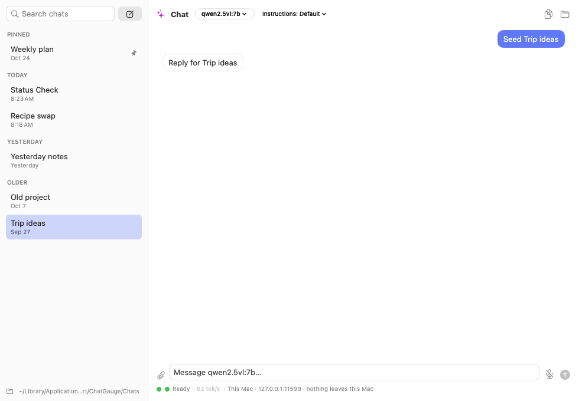
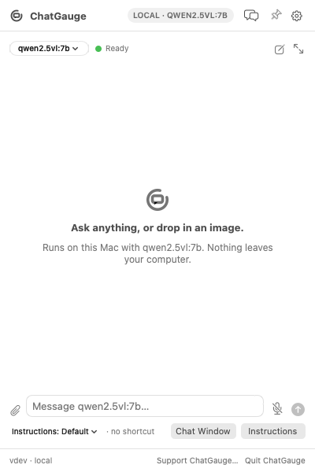
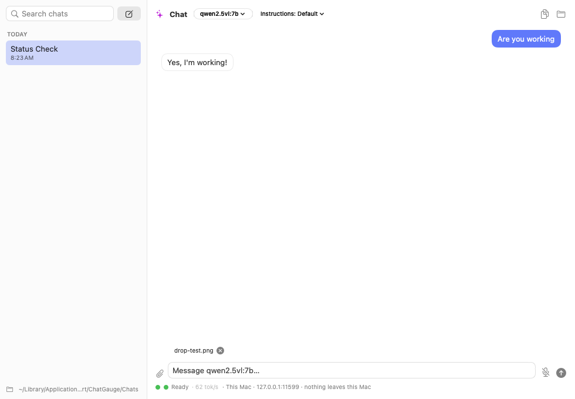
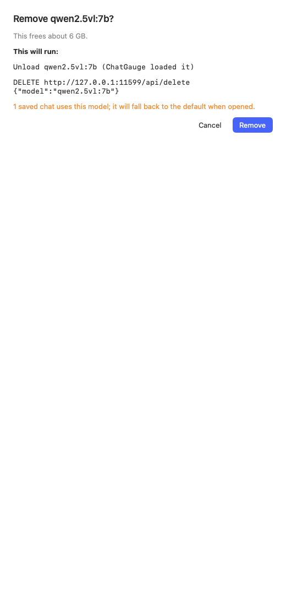
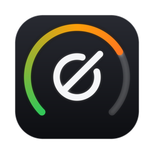
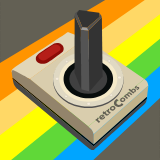

Local chat
Chats are Markdown files on this Mac. Pin, search, group, move, and export them from the Chat Window.
v0.1.0 · Free & open source · macOS 14+
ChatGauge is a menu-bar chat app that talks to a model running on your computer. Your questions, images, and conversations stay here. There is no account and no cloud.
brew install --cask stevencombs/tap/chatgauge
The first-run setup guide installs tools and models after you choose them. The cask does not download models for you.
Native Swift · Apple silicon recommended · MIT licensed · Fully local

Features
Open the popover from the menu bar, or use the Chat Window for a longer conversation.

Chats are Markdown files on this Mac. Pin, search, group, move, and export them from the Chat Window.

Drop or paste an image into a vision model and ask about it. The file stays on this Mac.

Pick a model per chat, or set a default for new ones. Optional uncensored vision models install only when you click Install. Remove asks you to confirm, names the model, and shows how much space you will get back.
Hold the mic to talk when whisper.cpp is set up. The setup guide can install it for you, or you can skip voice and add it later.
The first time you open ChatGauge, a guide checks Homebrew, lets you pick a models folder, installs the tools you want, and sends a short test prompt. Skip it and come back from Settings any time.
Prompts, images, and saved chats do not leave this Mac. ChatGauge has no account and no telemetry. It talks only to the Ollama server you point it at, which also runs locally.
Setup guide
ChatGauge does not pull models when you install the app. You choose them in the setup guide or later in Settings.
Install
brew install --cask stevencombs/tap/chatgauge
Update later with brew upgrade --cask chatgauge. The cask does not download models; the in-app setup guide handles that.
Download the zip from the latest release, unzip it, and drag ChatGauge.app into Applications. Each release lists the zip’s SHA-256. The app is ad-hoc signed and is not notarized, so macOS may ask you to allow it under System Settings › Privacy & Security.
Latest release →FAQ
No. ChatGauge is fully local. Prompts, images, and saved chats stay on this computer.
Two optional vision models in the catalog. They are not installed unless you choose them in Settings or the setup guide.
Yes. Settings › Model & Server has Remove. You’ll see the model name, how much space it will free, and a warning if saved chats use it. Those chats fall back to your default model the next time you open them.
No. If a shared Ollama LaunchAgent is already running, ChatGauge leaves it alone and talks to that server.
More apps from retroCombs
Small, native menu bar apps for Mac, built in the open.
Local chat with vision and voice, running on this Mac.

Your SuperGrok and Grok Bot weekly usage as colored rings in the menu bar.
Visit the GrokGauge page →Local AI that renames and sorts your video and photo clips in place, with transcripts saved next to them.
Visit the ClipGauge page →
ChatGauge was made by Steven “retroCombs” Combs together with Grok Bot. If it is useful, you can say thanks with a tip.